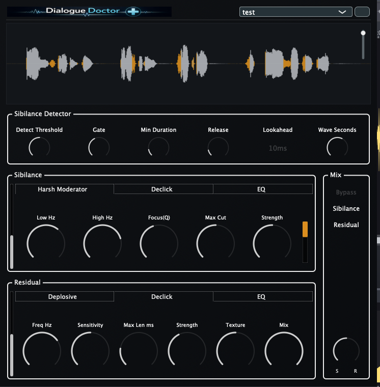

Version 1.5.0 — Out now with improved processing algorithms and sound quality.
Latest signed release: 1.5.0
Dialogue Doctor is a macOS plug-in focused on dialogue cleanup and tone consistency with separate sibilance and residual processing, so you can dial each independently. It is built for post-production, VO, and podcast editing.
Latest stable download is 1.5.0 (AAX / AU / VST3).

Note: With Contour Priority ON, processing leans toward continuous contour repair, so Max Len has less impact.
Quick polish for noisy or inconsistent dialogue across takes.
Keep narration clear and present while staying natural.
Separate sibilance and residual control across speakers.
Email: kjdevapphelp@gmail.com
Please include: macOS version, host version, and a short description (or screenshot) of the issue.